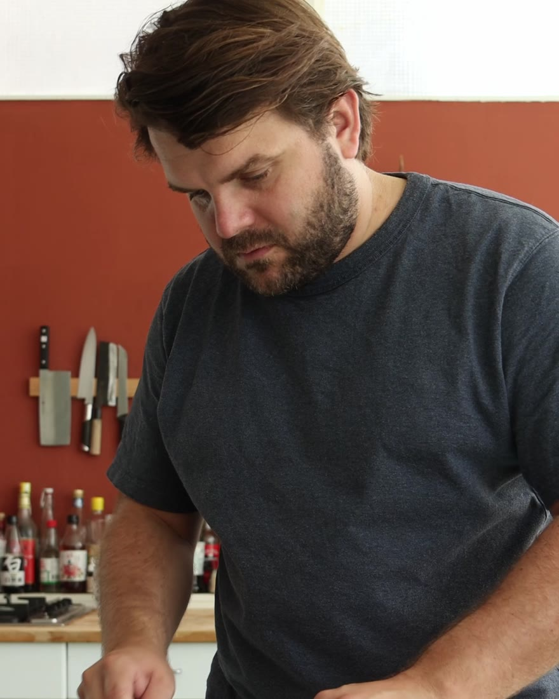

Catering
Lunches en diners voor groepen vanaf 15 personen. Op kantoor, thuis of op een feestlocatie.
Vanaf 15 personen

Vanuit Amsterdam, door heel Nederland
Lunches en diners voor groepen vanaf 15 personen. Op kantoor, thuis of op een feestlocatie.
Vanaf 15 personen
Een diner aan tafel, bij jou thuis of op een plek naar keuze. Het menu stellen we samen op.
Bij jou thuis of op locatie
Ik kook voor jou en je gasten, voor één avond of voor meerdere dagen.
Eén avond of langer